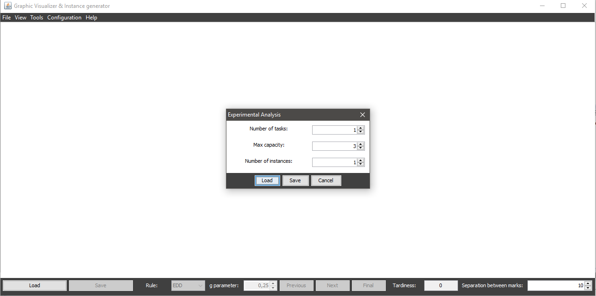
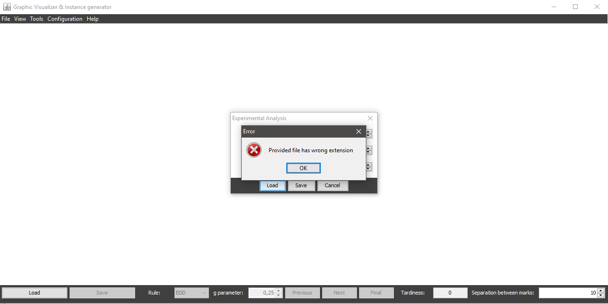
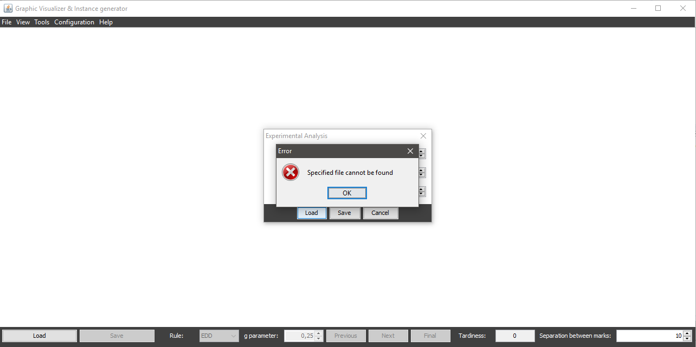
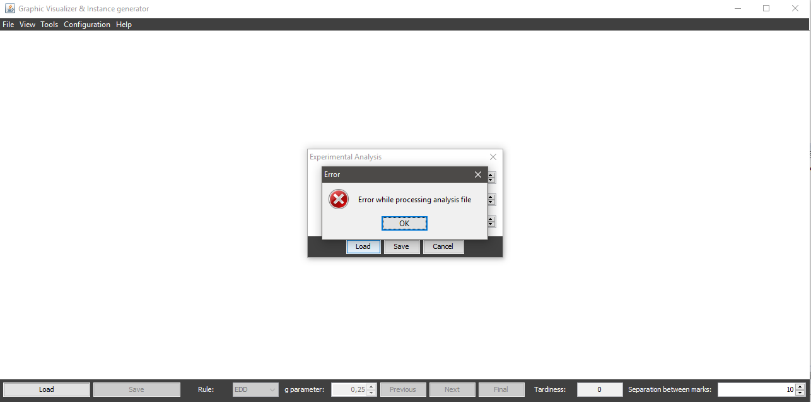

Once you access the experimental analysis dialog, to perform such analysis from file is neccesary to have a file with this format:
N:X
T:Y0,Y1,Y2
C:Z0,Z1,Z2
Each line represents a parameter for the analysis performance, followed by : and one or more numbers separated with ,:
One you have an analysis file, you only have to click the Load button at the bottom of the dialog.
Once you access the option, a dialog is displayed where you can navigate through your folders to choose which file you want to load in different ways:

if the chosen file doesn't exist, has an invalid extension (different from txt) or has an invalid format, the system will warn the user:
  Once the analysis is loaded, it will be processed (it may take a few seconds, based on the number of combinations) and, when finished, a dialog will be displayed where you can navigate through your folders to choose the name of the file to save (it's not required to specify the extension, the system will automatically add the xls extension to the file). Generated file can be opened with any software that supports xls.